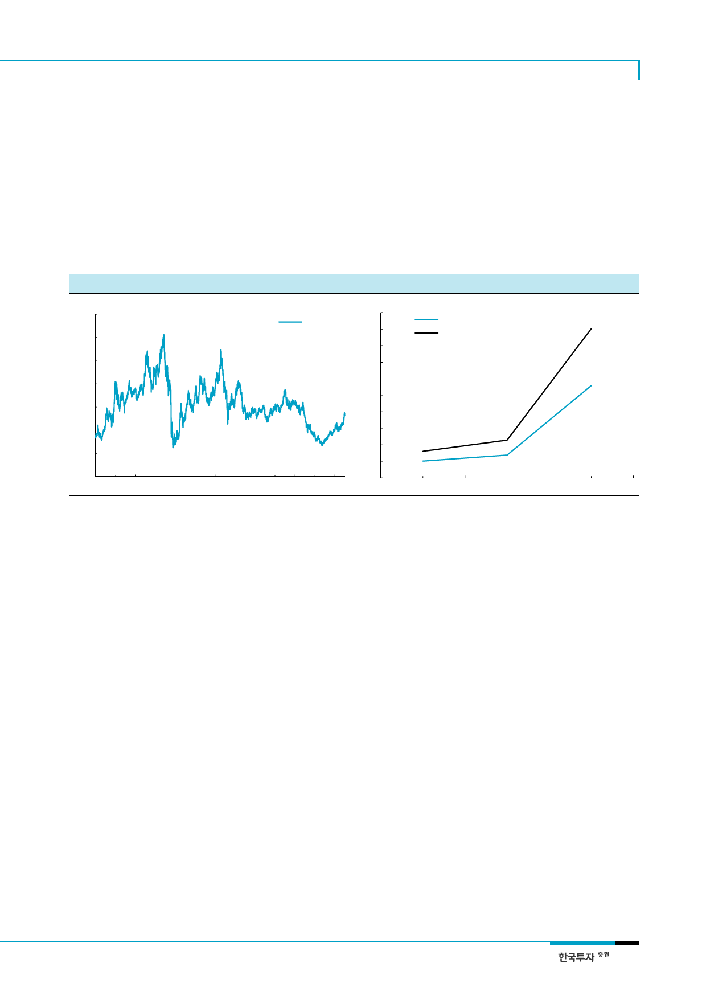

SK하이닉스(000660)
리레이팅의 조건은 낸드사업
경쟁력
SK하이닉스 주가의 리레이팅 조건은 디램이 아닌 낸드사업의 경쟁력 상승에 있다는 판단이
다. 현재 누리고 있는 디램사업의 높은 수익성은 변동성이 있을 수 밖에 없다는 점에서 높은
밸류에이션을 주기 어렵다. 높은 성장이 예상되는 낸드사업, 특히 3D낸드에서 경쟁력을 높
이는 것이 밸류에이션 상승의 조건이다. 낸드산업 성장을 이끌어 가는 SSD(Solid State
Disk) 시장에서 SK하이닉스의 점유율은 큰 변동이 없다. 2016년 전 세계 SSD시장에서 SK
하이닉스의 점유율은 2.8%로 전년 0.7%에서 약간 올랐고 이마저 대부분 PC용 SSD 시장에
서 점유율이 오른 덕분이다. 삼성전자의 Enterprise SSD시장 점유율이 35%로 17%p 상승
한 것과는 대조적이다.
[그림 20] SK하이닉스 12MF PBR
(배수)
3.5
3.0
2.5
2.0
1.5
1.0
0.5
0.0
Jan-05
Jan-07
자료: 한국투자증권
Jan-09
Jan-11
Jan-13
[그림 21] SK하이닉스 SSD 시장점유율 추이
12MF PBR
Jan-15 Jan-17
(%)
5.0
4.5
4.0
3.5
3.0
2.5
2.0
1.5
1.0
0.5
0.0
전체 SSD시장 내 SK하이닉스 점유율
PC용 SSD시장 내 SK하이닉스 점유율
2014
2015
자료: Gartner, 한국투자증권
2016
메모리 수익성 하락으로
2018년 영업이익 8.7조원
예상
2분기 영업이익 3.0조원 예상
투자의견 ‘중립’ 하향
3. 2018년 영업이익 20% 감소 예상
디램 수요 약세에 따른 가격하락으로 디램사업 수익성은 2017년 하반기에 고점을 형성할 것
이다. SK하이닉스의 2018년 디램사업 영업이익은 8.4조원으로 2017년 10.8조원 대비 22%
감소할 전망이다. 2018년 디램산업의 공급증가율은 21%로 낮게 유지되겠지만 수요증가율도
19%로 2017년 24% 대비 낮아져 수급이 악화될 전망이다. 디램의 영업이익 감소로 SK하이
닉스의 2018년 전체 영업이익도 8.7조원으로 전년대비 30% 감소할 것이다.
2분기 매출액은 7.1조원, 영업이익은 3.0조원으로 예상한다. 분기 초 추정치 2.9조원을 소
폭 상회하는데 디램 가격이 당초 예상을 웃도는 게 주요 이유다. 디램 매출액 중 서버디램의
비중이 33%로 1분기 29%보다 높아진 반면 모바일디램의 비중은 40% 미만으로 낮아진 것
으로 추정한다. PC디램 및 모바일디램의 수요증가율은 점차 낮아질 것이다.
디램 수급 약세 및 디램 수익성 하락으로 이익모멘텀 약화가 예상되는 SK하이닉스에 대한
투자의견을 ‘중립’으로 하향한다. 디램 수요증가율 둔화는 디램업체의 재고증가와 가격하락
으로 이어질 것이다. 2014년 이후 디램 사이클은 공급보다는 수요 변동에 좌우되고 있다. 공
급증가율은 제한됐지만 경기 혹은 가격 변동으로 수요는 더 큰폭으로 변동하기 때문이다. 수
요증가율이 공급증가율을 하회하면 가격은 약세로 전환될 것이다. 예상치 못한 서버디램의
수요강세도 데이터 트래픽 증가율이 둔화되면서 점차 약해질 것이다.
11